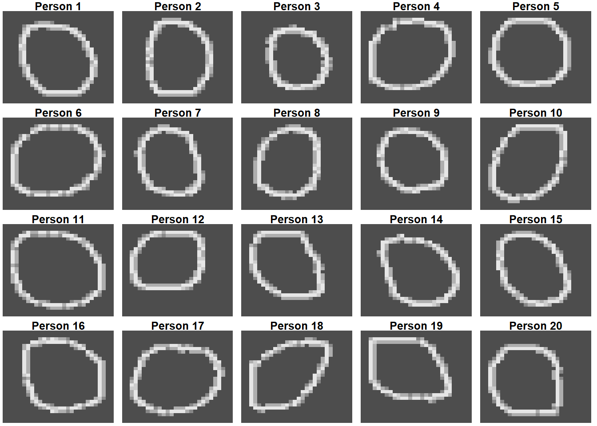
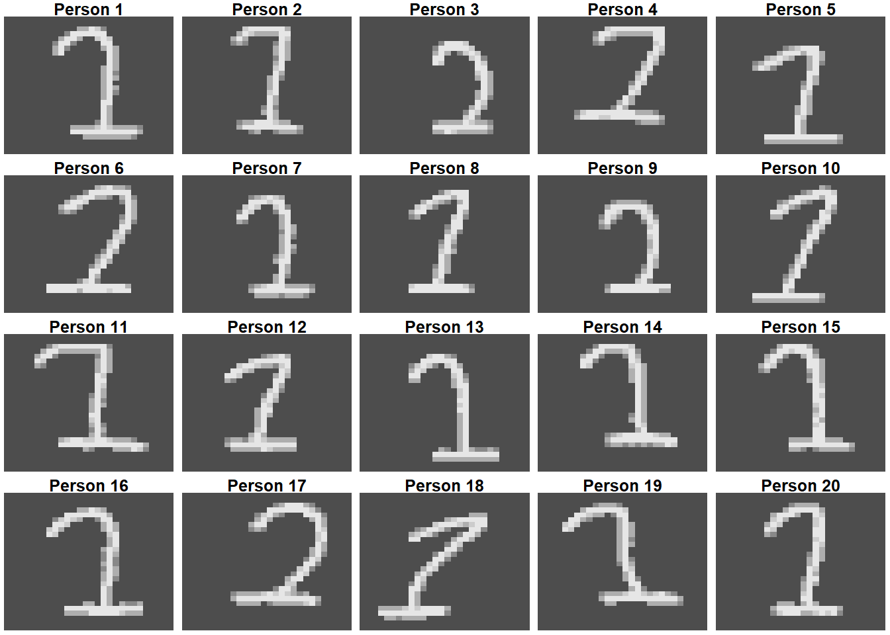
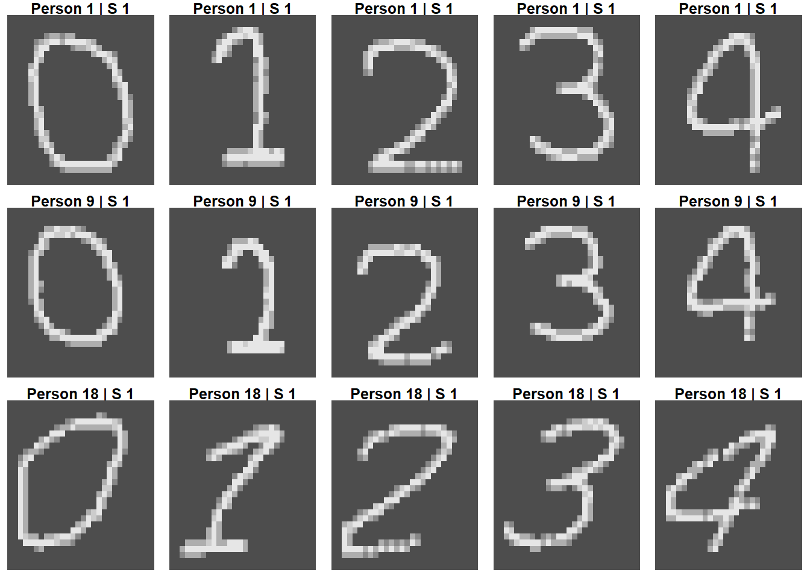

Exploratory Data Analysis
Data Science for Industry
The aim of this section is to explore the handwriting images and metadata, compare examples across people, digits and sessions, and identify visible sources of variation and limitations of the simulated data.
1 Data set and Metadata Overview
| Metadata Attribute | Value / Description |
|---|---|
Person ID Range (person_id) |
1 - 20 (20 unique subjects) |
Session ID Range (session) |
1 - 5 (5 distinct sessions) |
Digit Classes (digit) |
0 - 4 (5 classes) |
| Total Dataset Size (\(N\)) | 25000 images |
| Image Resolution (Height x Width) | 28 pixels x 28 pixels |
| Color Channels | 28 Channel(s) |
| Class Distribution (Digits 0 to 4) | Balanced (5000, 5000, 5000, 5000, 5000 samples each) |
The metadata identify the writer (person_id), the digit class (digit), and the recording session (session). These variables allow us to compare writers while holding the digit and session fixed, compare sessions for the same writer and digit, and compare different digits written by the same person.
2 Quantitative meta data analysis
| Digit | Person ID | Session | Person ID : Session | Residuals | |
|---|---|---|---|---|---|
| h | 7.6 | 62.9 | 0.1 | 2.9 | 26.5 |
| w | 43.5 | 40.5 | 0.4 | 6.8 | 8.8 |
| cx | 31.6 | 34.4 | 0.6 | 10.3 | 23.1 |
| cy | 15.0 | 10.3 | 0.4 | 17.0 | 57.3 |
To evaluate the stability and discriminative power of spatial feature measurements across handwritten digit samples, a variance decomposition analysis was conducted. The analysis decomposes total variance across four spatial metrics into five distinct components:
Feature Metrics: Digit height (\(h\)), digit width (\(w\)), horizontal center of mass (\(cx\)), and vertical center of mass (\(cy\)).
Variance Components: Digit identity (Digit), writer identity (Person ID), baseline session main effect (Session), writer-by-session interaction (Person ID : Session), and random residual variation across replicates (Residuals).
2.0.1 Feature Interpretation
Digit Height (\(h\)): Writer identity (Person ID) accounts for the dominant share of variance at 62.9%, whereas the interaction effect (Person ID : Session) accounts for only 2.9%. This demonstrates that character height serves as a highly stable, writer-specific trait that remains robust across distinct recording sessions.
Digit Width (\(w\)): Total variance is primarily partitioned between digit identity (43.5%) and writer identity (40.5%). Naturally, character width varies intrinsically across different digits (e.g., a digit ‘1’ versus a digit ‘0’); nevertheless, substantial inter-writer variance persists with minimal session-induced fluctuation (6.8%).
Horizontal Position (\(cx\)): Influenced moderately by both digit identity (31.6%) and writer identity (34.4%). Individual writers maintain consistent horizontal placement habits, though a moderate writer-by-session interaction (10.3%) indicates minor positional shifts across recording instances.
Vertical Position (\(cy\)): Exhibits poor stability for writer discrimination. Main writer variance accounts for only 10.3%, whereas writer-by-session interaction (17.0%) and residual noise (57.3%) dominate total variance. Consequently, vertical alignment varies substantially between sessions and individual stroke replicates, making it an unreliable feature for writer identification.
Overall, the variance decomposition yields several key insights regarding feature stability and writer discriminability. Main session effects contribute less than 1% across all spatial metrics (0.1%–0.6%), indicating that no single recording session exhibits global systematic bias or baseline shift, which supports the assumption that sessions represent comparable sampling conditions. Furthermore, inter-individual variance (Person ID) constitutes a major proportion of total variation for height, width, and horizontal positioning, confirming that individual writers possess measurable, repeatable handwriting characteristics that generalize across distinct sessions. Finally, handwriting variations between sessions manifest primarily as spatial positional shifts (\(cx, cy\)) rather than structural or dimensional resizing (\(h, w\)).
3 Euclidean Distance Analysis
| Digit 0 | Digit 1 | Digit 2 | Digit 3 | Digit 4 | |
|---|---|---|---|---|---|
same_writer_diff_session |
7.06 | 6.48 | 6.58 | 6.65 | 6.35 |
diff_writer_same_session |
8.78 | 7.85 | 8.09 | 8.17 | 7.98 |
diff_writer_diff_session |
8.79 | 7.85 | 8.10 | 8.18 | 7.98 |
| Ratio (Same/Diff Writer) | 0.80 | 0.83 | 0.81 | 0.81 | 0.80 |
Because distances are measured in pixel units, relative comparisons across conditions are more informative than absolute values (see Table 2). Across all digits (0 to 4), the mean Euclidean distance for the same writer across different sessions (\(6.35\)–\(7.06\) pixels) is consistently smaller than between different writers (\(7.85\)–\(8.79\) pixels), establishing the core signal required for writer identification.
However, this distinction is moderate. The ratio of same-writer to different-writer distance ranges tightly between \(0.80\) and \(0.83\) across all digits, showing that session-to-session variation accounts for roughly \(80\%\) of the distance to another writer’s sample. Additionally, distances between different writers are virtually identical within the same session (\(7.85\)–\(8.78\)) and across different sessions (\(7.85\)–\(8.79\)). This confirms the absence of a shared session effect, directly supporting previous variance decomposition findings (\(<1\%\) session variance) and validating the decision to hold out entire sessions for testing.
4 Variation between people
Firstly, we will compare all 20 peoples handwriting across one session. The main goal of this exercise is to check whether there are any visible variations among peoples handwriting within a particular session. The first image will compare the people writing the digit 0 in session 1.
From the image above we can see that there are different variations in the way people write the digit zero in the first session. Some peoples zeros are more elongated while others look more rounded. The size of the digit differs from person to person. The digits are tilted in different directions, some peoples zero are tilted to the left while others are tilted to the right.
For a more accurate prediction we will compare the between person variation for a different image in the same session. For this we will now compare the between person variation in session one for the digit 1.

In the image above we can see the that there are clear stylistic differences in the peoples handwriting. A visual comparison shows that some of the digits are more elongated than others. There is a clear difference in the way person 3 and person 20 wrote the same digit. Out of all the people, person 18 wrote a digit that tilts most to the right.
5 Variation across sessions for one person
Next we will explore is if there is variation within a persons handwriting. To do this we will randomly select 3 people and we will compare their handwriting across the five different sessions. This particular section is important because later we will build a Siamese network that will compare whether two images were written by the same person or not. A preliminary analysis will visually help us determine if there are similarities within a persons handwriting.

A visual examination of handwriting for the digit ‘0’ across five sessions reveals distinct, highly consistent stylistic characteristics within individual writers. Person 1 consistently produces a rounded digit featuring a noticeably flattened, vertical edge along the left side. In contrast, Person 9 exhibits a centered, overall rounded digit structure across all sessions. Finally, Person 18 displays an elongated, oval-shaped digit that is systematically tilted to the right. Despite slight session-to-session variations, each writer maintains a clear, unique visual signature across all five sessions.
6 Variation across digits for one person
Finally, we will assess the within person variation of the different digits. The main goal of this is to assess whether there are similarities between a persons handwriting for different digits. This section is important because the Siamese and CNN networks will be tasked identifying similarities within the different digits.
For this section we will use the same three people from the previous section. We will keep the session constant and we will assess them on session one.

Across all digits, a visual evaluation reveals distinctive structural and geometric features that define each individual’s overall writing style. Person 1 produces centered digits occupying consistent relative proportions, where digits 1, 2, and 3 share a similar curved, arch-like top loop, and digits 1 and 2 feature flat horizontal base strokes. Similarly, Person 9 exhibits overlapping structural traits across digits, including a smoothly curved top arch across digits 1, 2, and 3, flat horizontal base strokes on digits 1 and 2, and enclosed loop structures within digits 0 and 4. In contrast, Person 18 displays strong slanted and angular characteristics, with digits 1 through 4 featuring pronounced rightward slants and sharp, linear strokes rather than smooth curves, alongside flat horizontal baselines (digits 1 and 2) and sharp horizontal cross-strokes across digits 1, 2, and 4.
7 Data Limitations and Potential Problems
There some limitations with the data and this may cause potential problems when we are building our prediction models. Firstly, the data we are using is simulated and images do not contain real handwriting, the data lacks the organic irregularities, noise complexities, and unpredictable strokes found in real world handwriting. Secondly, the data set is constrained to five digits. It does not cover the full range of numeric digits or alphabet characters which limits how well the findings generalize to full handwriting recognition tasks.
Another potential issue with the data is the rigid structure and balance of the data. The data set has a well balanced structure which lacks the organic class imbalances and variable sample sizes typically characteristics of real world data collection. The variation in the independent sessions are artificially bounded into 5 discrete blocks rather than capturing a continuous, organic evolution pf a persons handwriting over time. Lastly, the resolution in the pixels is relatively low thus fine structural details, subtle pen-pressure changes, and intricate loop formations may be lost or pixeleted.
These problems have the potential to cause over fitting in the models. The way the data is structured has the potential to over inflate the accuracy during training and validation. Since the images are low resolution, the models can easily over fit to pixel-level noise or minor rendering artifacts introduced by the simulation engine, treating random pixel patterns as meaningful writer features rather than focusing on the actual stroke dynamic and shapes.